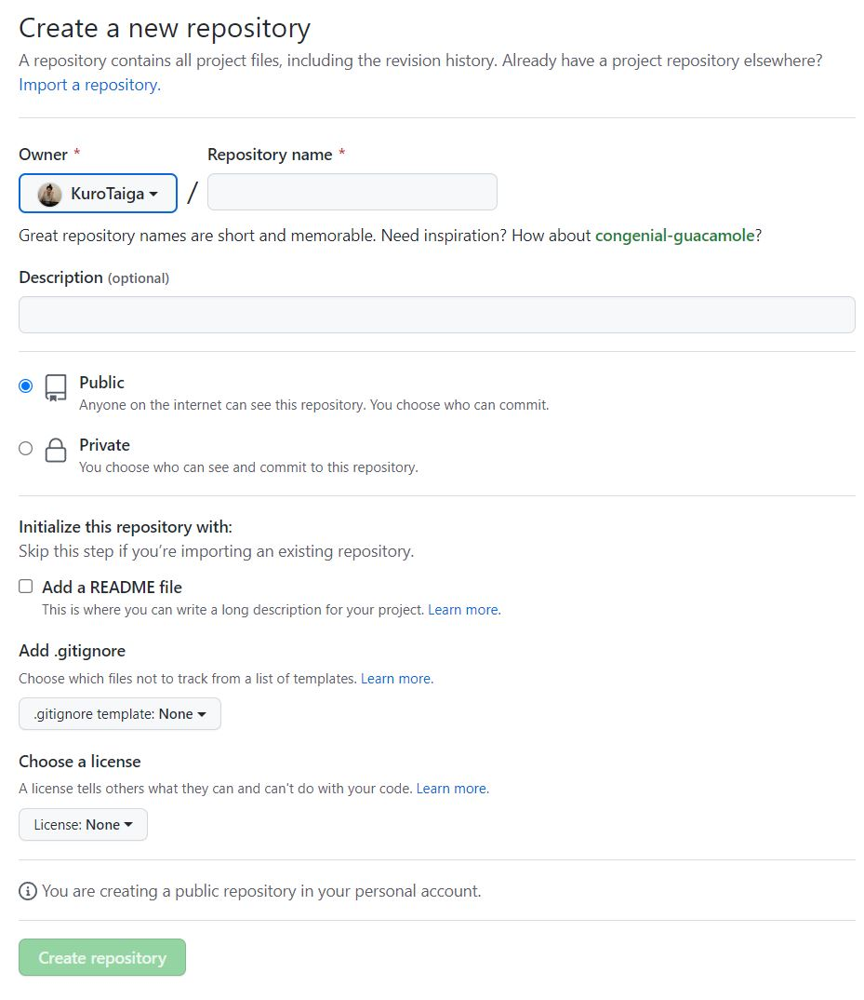

How To Create a Personal Webpage on Github
Step 1: login on Github
Step 2: Create new repository
On your Github home page, you want to click on the green "New" button to create a new repository.
It will take you to a new page, shown in the image below
Under the Repository Name, enter the name <YourUserName.github.io>. Make sure Public is selected for this repo type. Click Create Repository.
Step 3: Create local file
Use VSCode (or your preferred editor), create an index.html file with the content like shown in the image below:
Be sure to replace "yourname" with your name, and "./yourimagename.jpg" by the path to the image you want to add in your website, for example: a photo of yourself. You can also play around with value of the width and height of the image to get a prettier looking results.😃
Step 4: Upload local files to Github
Back on your github page, you can nown sellect the Add file button, then sellect Upload files from the drop down window.
Drag and drop (or choose) the files to be uploaded. In this case you need to include the index.html file and the photo you included in your webpage. Add comments and description as brief summary of the changes. Select to commit to the main brach.
Step 5: Verify your work
Open a blank webpage and type https://<yourusername>.github.io. Your website should show up.
Now you know how to create your github webpage!